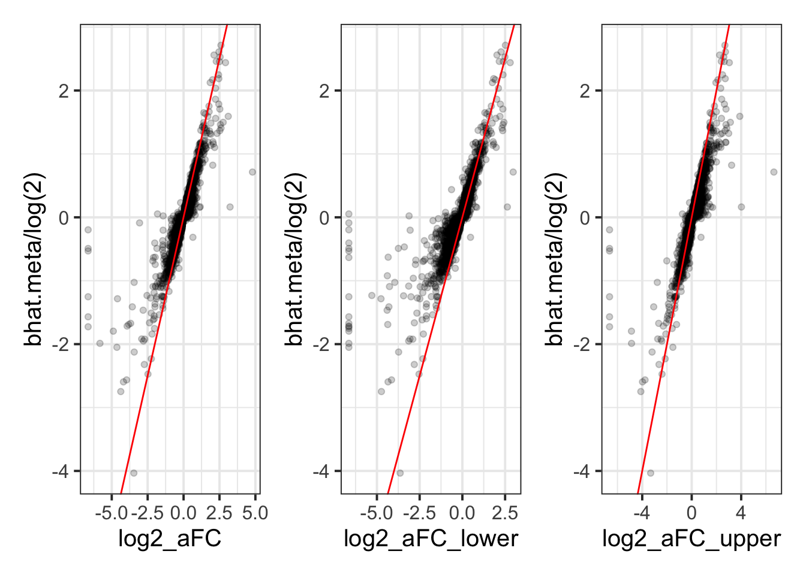
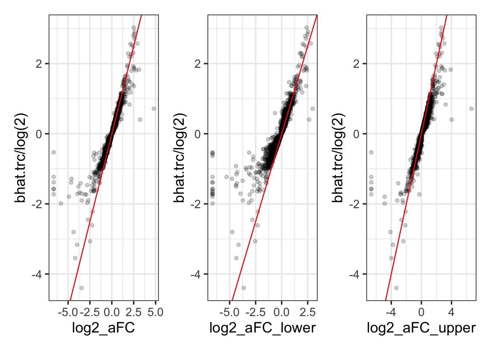
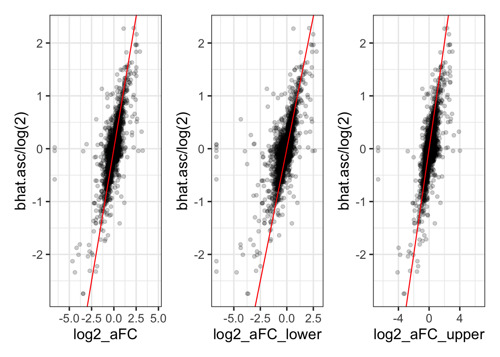
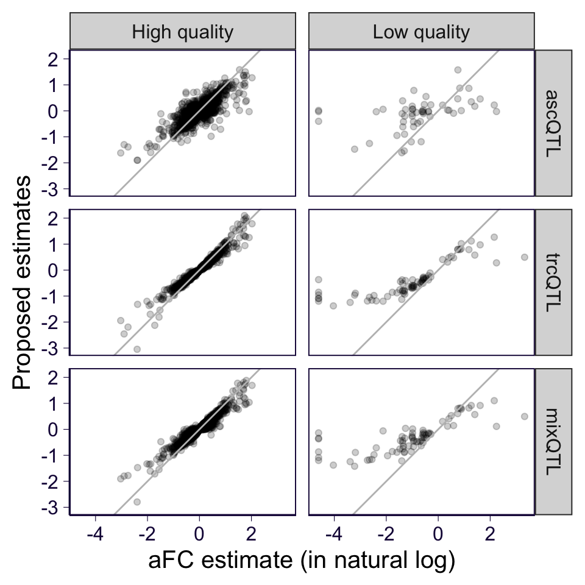

rm(list = ls())
library(data.table)
options(datatable.fread.datatable = F)
library(dplyr)
library(ggplot2)
library(patchwork)
theme_set(theme_bw(base_size = 15))
source('../code/rlib_analysis.R')
source('https://gist.githubusercontent.com/liangyy/43912b3ecab5d10c89f9d4b2669871c9/raw/3ca651cfa53ffccb8422f432561138a46e93710f/my_ggplot_theme.R')Here we meant to compare the aFC estimates reported in GTEx v8 to the ascQTL estimate in mixQTL analysis. The comparison limits to the genes passing QC. Besides, since aFC estimate was reported for the top variant per eGene, we limit our scope to top eQTL in GTEx v8 for this comparison.
df_mix = read.table('~/Desktop/mixqtl-pipeline-results/postprocess-mixqtl/Whole_Blood-x-result-mixqtl-IN-cleaned-Whole_Blood.v8.egenes.txt.gz', header = T)
df_afc = fread('zcat < ~/Downloads/GTEx_Analysis_v8_eQTL/Whole_Blood.v8.egenes.txt.gz', header = T)
# df_afc_impute = fread('~/Downloads/Whole_Blood_imputed.aFC.txt', header = T)
# df_afc$log2_aFC = as.numeric(df_afc$log2_aFC)
# df_afc$pval_nominal = as.numeric(df_afc$pval_nominal)
# df_afc$log2_aFC_lower = as.numeric(df_afc$log2_aFC_lower)
# df_afc$log2_aFC_upper = as.numeric(df_afc$log2_aFC_upper)
# df_afc$slope = as.numeric(df_afc$slope)
# afc_merge = inner_join(df_afc, df_afc_impute, by = c('gene_id' = 'pid', 'variant_id' = 'sid'))
# plot(afc_merge$log2_aFC.x, afc_merge$log2_aFC.y)
# head(df_afc)# join the results of mixQTL and eQTL in GTEx together
merge = inner_join(df_mix %>% select(bhat.trc, bhat.asc, bhat.meta, se.meta, pval.meta, gene, variant_id), df_afc %>% mutate(gene = trim_dot(gene_id)), by = c('gene', 'variant_id'))## Warning: Column `gene` joining factor and character vector, coercing into character vector## Warning: Column `variant_id` joining factor and character vector, coercing into character vector# merge = inner_join(merge, df_afc_impute %>% select(pid, sid, log2_aFC, log2_aFC_lower, log2_aFC_upper) %>% mutate(gene = trim_dot(pid)), by = c('gene', 'variant_id' = 'sid'), suffix = c('', '_imputed'))
# plot(merge$log2_aFC, merge$log2_aFC_imputed)plist = list()
plist[[length(plist) + 1]] = merge %>% ggplot() +
geom_point(aes(x = log2_aFC, y = bhat.meta / log(2)), alpha = .2) +
geom_abline(slope = 1, intercept = 0, color = 'red')
plist[[length(plist) + 1]] = merge %>% ggplot() +
geom_point(aes(x = log2_aFC_lower, y = bhat.meta / log(2)), alpha = .2) +
geom_abline(slope = 1, intercept = 0, color = 'red')
plist[[length(plist) + 1]] = merge %>% ggplot() +
geom_point(aes(x = log2_aFC_upper, y = bhat.meta / log(2)), alpha = .2) +
geom_abline(slope = 1, intercept = 0, color = 'red')
# ggsave('../output/aFC_vs_mixQTL.png', plist[[1]] + plist[[2]] + plist[[3]], width = 10, height = 3)
plist[[1]] + plist[[2]] + plist[[3]]
plist = list()
plist[[length(plist) + 1]] = merge %>% ggplot() +
geom_point(aes(x = log2_aFC, y = bhat.trc / log(2)), alpha = .2) +
geom_abline(slope = 1, intercept = 0, color = 'red') # + facet_wrap(~high_quality, labeller = label_both)
plist[[length(plist) + 1]] = merge %>% ggplot() +
geom_point(aes(x = log2_aFC_lower, y = bhat.trc / log(2)), alpha = .2) +
geom_abline(slope = 1, intercept = 0, color = 'red')
plist[[length(plist) + 1]] = merge %>% ggplot() +
geom_point(aes(x = log2_aFC_upper, y = bhat.trc / log(2)), alpha = .2) +
geom_abline(slope = 1, intercept = 0, color = 'red')
# ggsave('../output/aFC_vs_trcQTL.png', plist[[1]] + plist[[2]] + plist[[3]], width = 10, height = 3)
plist[[1]] + plist[[2]] + plist[[3]]
plist = list()
plist[[length(plist) + 1]] = merge %>% ggplot() +
geom_point(aes(x = log2_aFC, y = bhat.asc / log(2)), alpha = .2) +
geom_abline(slope = 1, intercept = 0, color = 'red')
plist[[length(plist) + 1]] = merge %>% ggplot() +
geom_point(aes(x = log2_aFC_lower, y = bhat.asc / log(2)), alpha = .2) +
geom_abline(slope = 1, intercept = 0, color = 'red')
plist[[length(plist) + 1]] = merge %>% ggplot() +
geom_point(aes(x = log2_aFC_upper, y = bhat.asc / log(2)), alpha = .2) +
geom_abline(slope = 1, intercept = 0, color = 'red')
# ggsave('../output/aFC_vs_ascQTL.png', plist[[1]] + plist[[2]] + plist[[3]], width = 10, height = 3)
plist[[1]] + plist[[2]] + plist[[3]]## Warning: Removed 234 rows containing missing values (geom_point).
## Warning: Removed 234 rows containing missing values (geom_point).
## Warning: Removed 234 rows containing missing values (geom_point).
We stratify aFC estimate into two categories:
high_quality = function(m, l, u, fold = log2(50)) {
(u - l) < 1 & l >= -fold & u <= fold
}
relabel = function(x) {
x = as.character(x)
m = unlist(lapply(strsplit(x, '\\.'), function(v) {
v[2]
}))
m[m == 'meta'] = 'mix'
f = paste0(m, 'QTL')
f = factor(f, levels = c('ascQTL', 'trcQTL', 'mixQTL'))
return(f)
}
dfplot = merge %>% mutate(high_quality_ind = high_quality(log2_aFC, log2_aFC_lower, log2_aFC_upper))
dfplot$high_quality = 'High quality'
dfplot$high_quality[!dfplot$high_quality_ind] = 'Low quality'
dfplot = dfplot %>%
select(high_quality, variant_id, gene, bhat.trc, bhat.asc, bhat.meta, log2_aFC) %>%
reshape2::melt(id.var = c('high_quality', 'variant_id', 'gene', 'log2_aFC')) %>%
rename(method = variable, betahat = value) %>%
mutate(log_aFC = log2_aFC * log(2), method = relabel(method))
p = dfplot %>% ggplot() +
geom_point(aes(x = log_aFC, y = betahat), alpha = .2) +
geom_abline(slope = 1, intercept = 0, color = 'gray') + facet_grid(method~high_quality) +
th2 +
xlab('aFC estimate (in natural log)') +
ylab('Proposed estimates') + coord_equal()
p## Warning: Removed 234 rows containing missing values (geom_point).
ggsave('../output/aFC_vs_proposed_estimates.png', p, height = 5, width = 5)## Warning: Removed 234 rows containing missing values (geom_point).# gene_annot = read.table('https://bitbucket.org/yanyul/rotation-at-imlab/raw/7c966369cf9ac1f2563409b09625a2b3cf2d592e/data/annotations_gencode_v26.tsv', header = T)
# merge = merge %>% left_join(gene_annot, by = c('gene' = 'gene_id'))
# get_var_pos = function(x) {
# f = strsplit(x, '_')
# unlist(lapply(f, function(x) { as.numeric(x[2]) }))
# }
# merge$var_pos = get_var_pos(merge$variant_id)
# is_inside = function(s, e, this) {
# this > s & this < e
# }
# merge = merge %>% mutate(is_in = is_inside(gene_start, gene_end, variant_pos))
# merge %>% ggplot() +
# geom_point(aes(x = log2_aFC, y = bhat.trc / log(2)), alpha = .2) +
# geom_abline(slope = 1, intercept = 0, color = 'red') + facet_wrap(~chr)
#
# gene_meta = read.table('~/Desktop/mixqtl-pipeline-results/misc_data/gtex-v8-genes-passed-qc-with-median-trc.txt', header = T)
#
# clean_indiv = function(s) {
# unlist(lapply(strsplit(s, '-'), function(x) {
# paste0(x[1], '-', x[2])
# }))
# }
# parse_obs = function(x) {
# ee = unlist(lapply(strsplit(x, '\\|'), function(s) {as.numeric(s[1])}))
# ff = unlist(lapply(strsplit(x, '\\|'), function(s) {as.numeric(s[2])}))
# return(list(h1 = ee, h2 = ff))
# }
#
# phaser = read.table('~/Desktop/mixqtl-pipeline-results/ase_temp.txt', header = T, comment.char = '')
# phaser = phaser[, c(-1, -2, -3, -4)]
# df_phaser = data.frame(obs = as.character(phaser[1, ]), indiv = stringr::str_replace_all(colnames(phaser), '\\.', '-'))
# samples = read.table('~/Desktop/mixqtl-pipeline-results/sample-id-Whole_Blood.txt')
# df_phaser = df_phaser %>% filter(indiv %in% samples$V1)
# e = readRDS('~/Desktop/mixqtl-pipeline-results/input--ENSG00000008128.rds')
# df_phaser = df_phaser %>% mutate(indiv = clean_indiv(indiv))
# library(mixqtl)
# data_collector = e
# geno1 = t(data_collector$geno1)
# geno2 = t(data_collector$geno2)
# class(geno1) = 'numeric'
# class(geno2) = 'numeric'
# is_na = is.na(geno1) | is.na(geno2)
# geno1 = impute_geno(geno1)
# geno2 = impute_geno(geno2)
# geno1[is_na] = (geno1[is_na] + geno2[is_na]) / 2
# geno2[is_na] = geno1[is_na]
# idx = which(colnames(geno1) == 'chr1_1689221_G_A_b38')
# delta_x = geno1[,idx] - geno2[,idx]
# df_delta = data.frame(indiv = names(delta_x), delta_x = as.numeric(delta_x))
# df_phaser = df_phaser %>% inner_join(df_delta, by = 'indiv')
# oo = parse_obs(df_phaser$obs)
# df_phaser = df_phaser %>% mutate(h1 = oo$h1, h2 = oo$h2)
# df_phaser %>% filter(delta_x != 0) %>% mutate(est = log2((h1 + 1) / (h2 + 1)) * delta_x) %>% filter(est != 0)
# merge %>% ggplot() + geom_point(aes(x = log2_aFC, y = slope), alpha = .2) + geom_abline(slope = 1, intercept = 0, color = 'red')
# plot(-log(merge$pval.meta), -log(merge$pval_nominal))